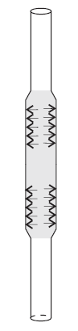
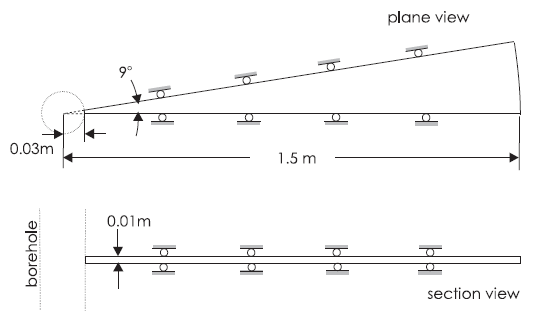
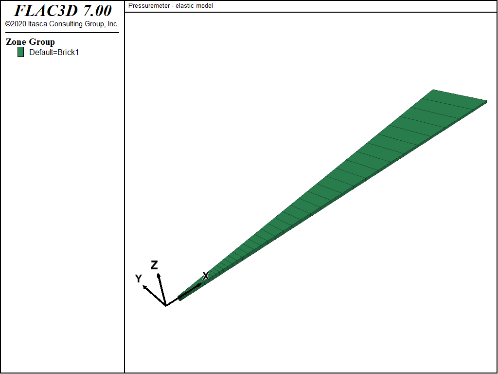
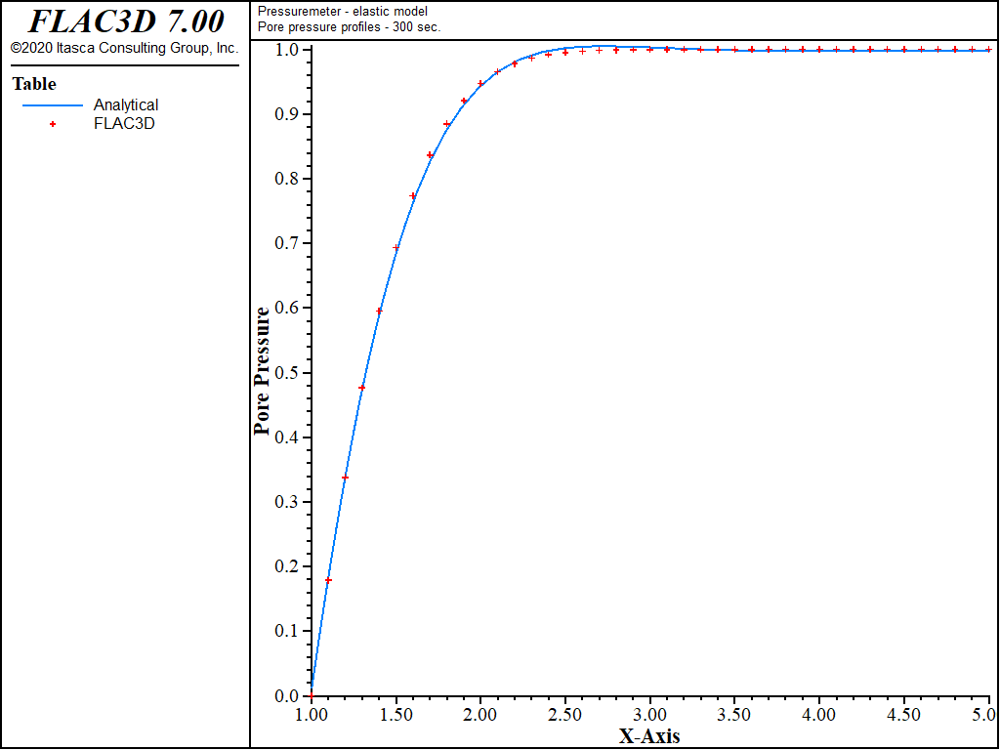
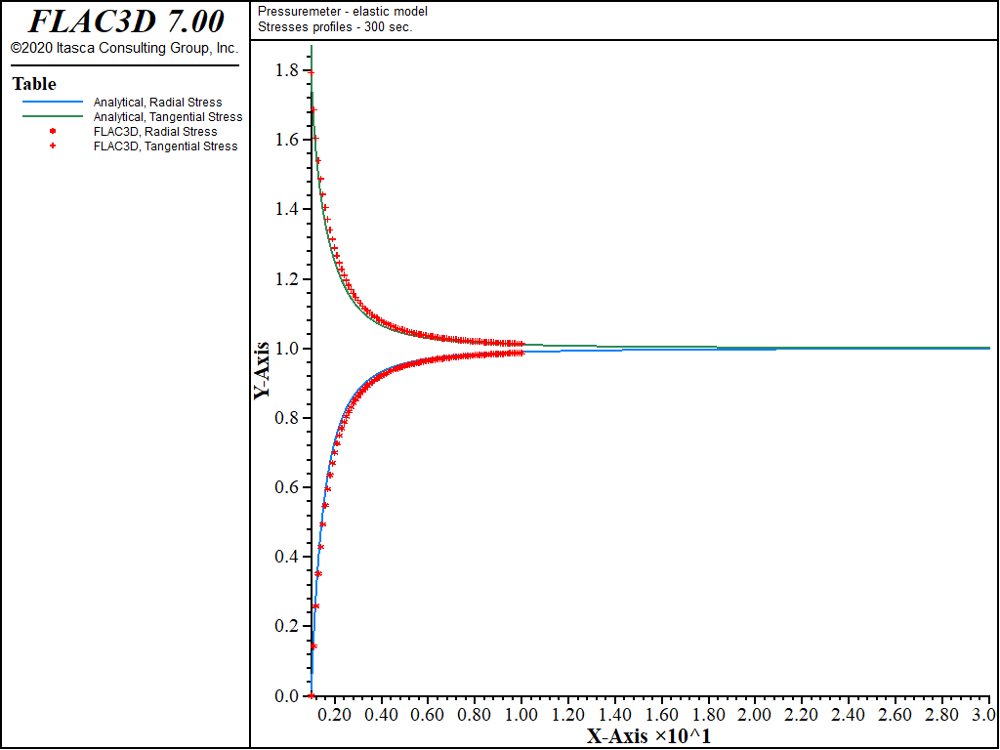
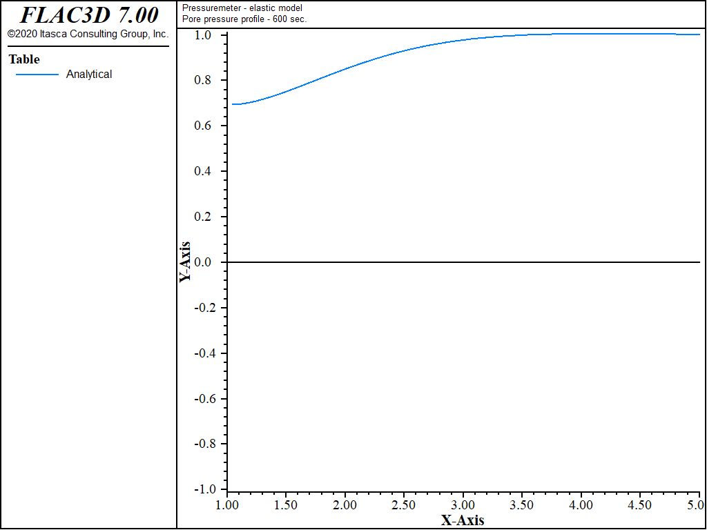
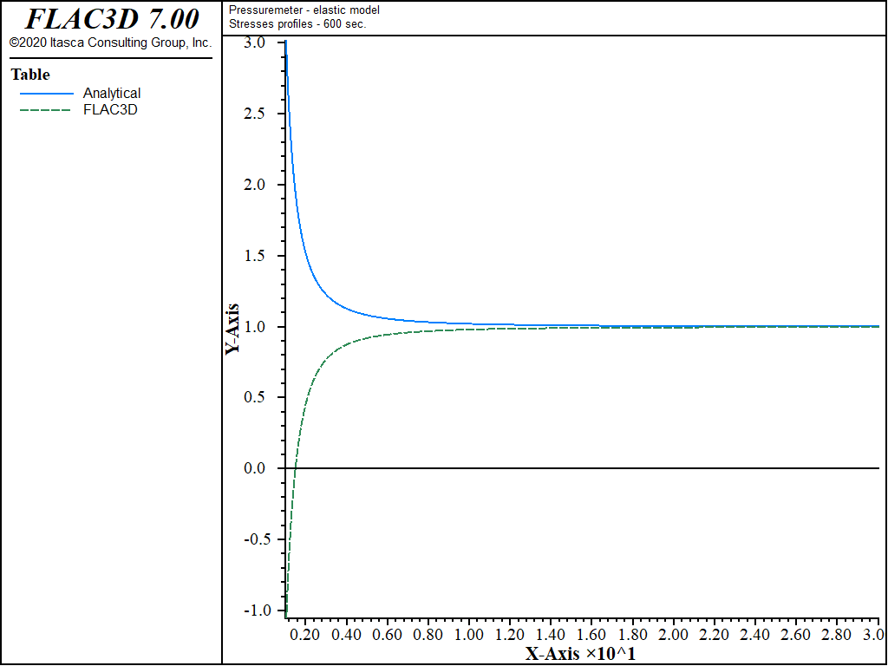
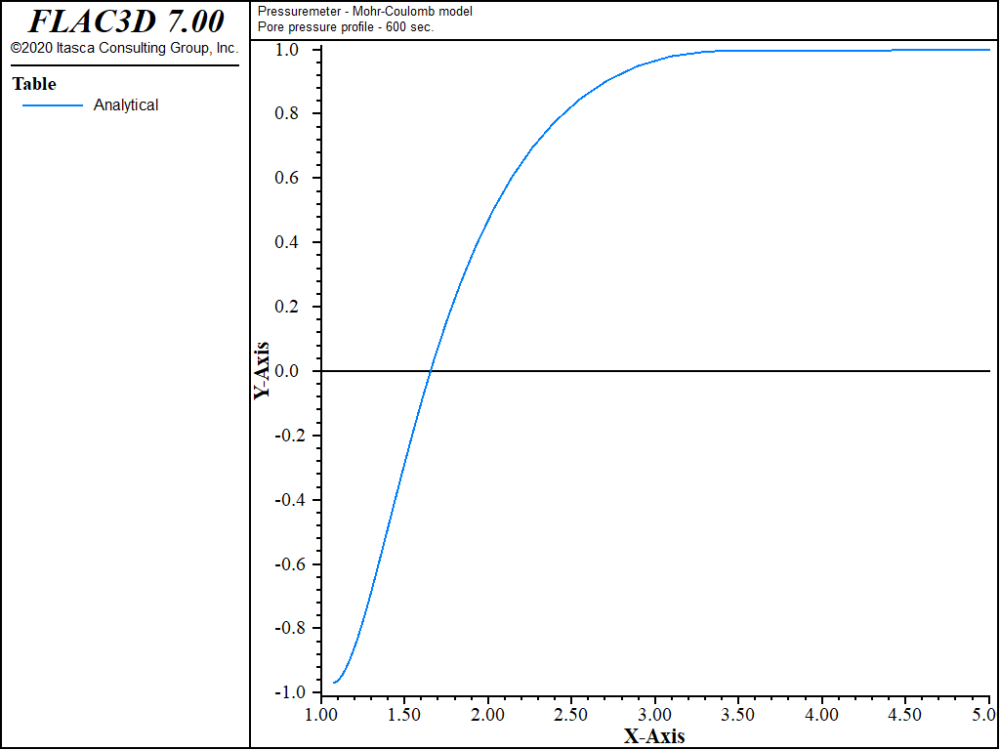
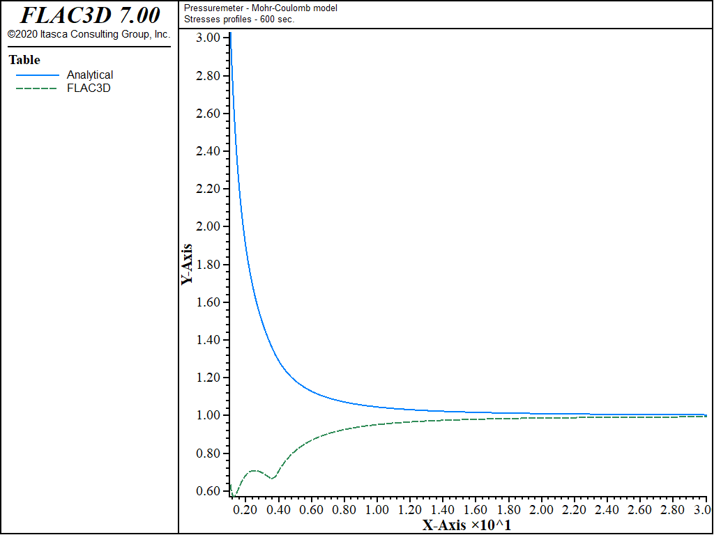

旁压仪试验
注意
本示例的项目文件可在 FLAC3D 中查看/运行。[1] 该项目的主数据文件见本示例末尾（main data files）。
旁压仪试验用于确定土体的原位力学性质（Wood，1990）。将一个长橡胶膜在竖直钻孔的孔壁上扩张（图 1（Figure 1））。膜内压力恒定。孔壁的径向位移作为压力的函数进行量测。在与钻孔垂直且距膜端足够远的平面内，土体发生平面应变变形。
钻孔（半径 \(a\) = 0.03 m）钻设于均质、各向同性土体中。假定土体表现为充满地下水的线弹性材料。本问题假定土体和地下水的若干力学性质如下：
| 剪切模量（\(G\)） | 11.1 MPa |
| 体积模量（\(K\)） | 33.3 MPa |
| 孔隙率（\(n\)） | 0.48 |
| 土体渗透率（\(k\)） | 1.02 × 10-14 \({m^2}\over{Pa-sec}\) |
| 水的体积模量（\(K_f\)） | 500 MPa |

图 1：旁压仪试验中的圆柱腔体扩张。
土体（总）应力的初始状态为各向同性：\(\sigma_1=\sigma_2=\sigma_3\) = -327.87 kPa，而初始孔隙压力为 \(p=p_i\) = 147.0 kPa。
钻孔后允许土体固结 300 秒。固结完成后，在 600 秒内将橡胶膜内的压力由零增大到 1 MPa。（橡胶膜阻止地下水进一步排入钻孔。）
弹性介质中钻孔二维固结的解析解由 Detournay 和 Cheng（1988）获得。钻孔通过移除作用于孔内边界上的应力并在时刻 \(t\) = 0 将孔隙压力设为零来模拟。由于初始应力为各向同性，加载条件可分解为两种模式：（1）模式 1，各向同性应力；（2）模式 2，初始孔隙压力分布。每种加载模式下孔壁处的边界条件可表示为：
- 模式 1
- 模式 2
模式 1 加载引起的应力和位移由经典 Lamé 解描述。由于由 Lamé 解计算的体应变在整个域内为零，模式 1 加载不产生孔隙压力，变形瞬时发生。模式 2 加载引起的孔隙压力场演化由齐次扩散方程控制。变形场和应力场可由孔隙压力场计算得到。该问题在 Laplace 变换域中求解，并采用 Stehfest（1970）发展的数值反演方法将解变换回时间域。完整的解由 Detournay 和 Cheng（1988）描述。解析解经计算后导入 FLAC3D 表格，以便与数值结果进行比较。
由于问题是轴对称的，模拟采用一行 61 个网格单元构成的 9° 角截断楔形体。模型几何和边界条件示于图 2（Figure 2）。FLAC3D 网格见图 3（Figure 3）。远场边界位于半径 \(b\) = 1.50 m 处，若将半径 \(b\) 按钻孔半径（\(a\) = 0.03 m）缩放，则可视其为无穷远。（由模型扩散系数和模拟时间得出的长度也远小于 \(b\)。）

图 2：FLAC3D 模拟的域。


图 3：FLAC3D 网格。
模拟按与现场试验实际操作相对应的步骤进行：
（1）将钻孔周边上的总应力降至零，以模拟钻孔。尽管（FLAC3D 模型中的）总应力是分步降至零的，但实际流动时间的变化是瞬时的（即模型发生不排水变形）。（关闭流体流动计算：模型流体活动命令（model fluid active） 关闭（off）。）模型通过迭代达到力学平衡。
（2）将钻孔周边的压力边界条件设为零。模型固结 300 秒（模型流体活动命令（model fluid active） 开启（on）），从而使地下水排入钻孔。
（3）将钻孔周边定义为不透水（由于安装了橡胶膜），并在钻孔周边施加压力边界条件：1.0 MPa 分 100 级施加，每级 6 秒。也就是说，土体在施加的荷载下固结 6 秒后，再施加下一级荷载增量（0.01 MPa）。
固结 300 秒后，由 FLAC3D 计算以及采用 Detournay 和 Cheng（1988）闭合形式解得到的归一化孔隙压力 \(p/p_i\)、归一化径向应力 \(\sigma_{rr}/\sigma_i\) 和切向应力 \(\sigma_{\theta\theta}/\sigma_i\)（作为归一化半径 \(r/a\) 的函数）的分布曲线，示于图 4（Figure 4） 和 图 5（Figure 5）。各曲线之间吻合非常好。
钻孔加压 600 秒后归一化孔隙压力以及径向和切向应力的分布曲线见图 6（Figure 6） 和 图 7（Figure 7）。


图 4：孔隙压力分布——固结 300 秒。


图 5：径向和切向正应力分布——固结 300 秒。


图 6：孔隙压力分布——固结 600 秒。


图 7：径向和切向正应力分布——固结 600 秒。
旁压仪试验中的压力变化常常会导致土体产生非线性塑性变形。因此，采用 Mohr-Coulomb 模型对该问题的土体塑性变形进行模拟。模拟中假定三个参数：
| 摩擦角（\(\phi\)） | 22° |
| 剪胀角（\(\psi\)） | 10° |
| 黏聚力（\(c\)） | 26 kN/m2 |
在 Mohr-Coulomb 材料中，钻孔加压 600 秒后归一化孔隙压力以及归一化径向和切向应力的分布曲线见图 8（Figure 8） 和 图 9（Figure 9）。
线弹性材料的数值解由“Pressuremeter-Elastic.dat”中列出的数据文件生成。Mohr-Coulomb 材料的输入数据文件与之相同，只是（1）材料模型被声明为 Mohr-Coulomb 材料（指定Mohr-Coulomb本构模型（zone cmodel assign mohr-coulomb）），以及（2）添加了相应的材料性质（单元属性体积 333 E7 剪切 111 E7 摩擦 30 剪胀 10 黏聚力 26000（zone property bulk 3.33e7 shear 1.11e7 friction 30 dilation 10 cohesion 26000））。数据文件“fishFunctions”生成包含归一化孔隙压力和归一化应力分布曲线的表格（见“Pressuremeter-MC.dat”）。数据文件“preana”包含存储加压 300 秒后孔隙压力、径向和切向应力分布解析弹性解的表格。


图 8：孔隙压力分布——固结 600 秒（Mohr-Coulomb 材料）。


图 9：径向和切向正应力分布——固结 600 秒（Mohr-Coulomb 材料）。
参考文献
Detournay, E., and A. H. D. Cheng. “Poroelastic Response of a Borehole in a Non-Hydrostatic Stress Field,” Int. J. Rock Mech. Sci. & Geomech. Abstr., 25(3), 171-182 (1988).
Stehfest, H. “Numerical Inversion of Laplace Transforms,” Communic. Ass. Comput. Mach., 13, 47-49 (1970).
Wood, D. M. 《土的行为与临界状态土力学》。Cambridge: Cambridge University Press（1990）。
数据文件
Pressuremeter-Elastic.dat
; 孔隙弹性材料中的旁压试验，(a) 弹性模型
model new
model title 'Pressuremeter - elastic model'
fish automatic-create off
program call 'fishFunctions' suppress
[global time0 = time.clock]
model configure fluid
zone create brick point 0 (0.03,0,0) point 1 (1.5,0,0) ...
point 2 (0.03,0,-0.01) point 4 (1.5,0,-0.01) ...
point 3 (2.96307e-2,0.46930e-2,0) ...
point 6 (1.48153,0.23465,0) ...
point 5 (2.96307e-2,0.46930e-2,-0.01) ...
point 7 (1.48153,0.23465,-0.01) ...
size 61 1 1 ratio 1.1 1 1
zone face skin
; --- 力学模型，弹性 ---
zone cmodel assign elastic
zone property bulk 3.33e7 shear 1.11e7
zone initialize stress xx -327870 yy -327870 zz -327870
; --- 地下水模型 ---
zone fluid cmodel assign isotropic
zone fluid biot on
zone fluid property permeability 1.02e-14
zone gridpoint initialize biot [5.0e8/0.48]
zone gridpoint initialize pore-pressure 147000
; -- 除 'West' 应力外的所有边界条件
zone face apply stress-normal -327870 range group 'East'
zone gridpoint fix pore-pressure range group 'West'
zone face apply velocity-normal 0 range group 'North'
zone face apply velocity-normal 0 range group 'South'
zone face apply velocity-normal 0 range group 'Top'
zone face apply velocity-normal 0 range group 'Bottom'
; --- 开挖：分步将总压力降至零 ---
[global factor = 0.99]
fish define slow_excav
if zone.mech.ratio < 1e-5 then
factor = math.max(0, factor - 0.0001)
endif
slow_excav = factor
end
zone face apply stress-normal -327870 fish slow_excav range group 'West'
model fluid active off
model large-strain on
model solve ratio 3e-6
model save 'pre1'
; --- 让水流出 300 秒 ---
model fluid active on
zone gridpoint initialize pore-pressure 0 range group 'West'
model fluid substep 10
model mechanical substep 40000
model mechanical slave on
model solve fluid time-total 300 or mechanical ratio 3e-6
model save 'pre2'
; --- 在钻孔内部施加压力 ---
zone gridpoint free pore-pressure range group 'West'
fish define charge
charge = math.max(0.0,fluid.time.total-300.0) / 600.0
end
zone face apply stress-normal -1e6 fish charge range group 'West'
model mechanical substep 40000
model mechanical slave on
model fluid active on
model solve fluid time-total 900 or mechanical ratio 3e-6
[global time = (time.clock-time0)/100.0]
fish list [time]
model save 'pre3'
Pressuremeter-MC.dat
; 孔隙弹性材料中的旁压试验，(b) 摩尔–库仑模型
model new
model title 'Pressuremeter - Mohr-Coulomb model'
fish automatic-create off
program call 'fishFunctions' suppress
[global time0=time.clock]
model configure fluid
zone create brick point 0 (0.03,0,0) point 1 (1.5,0,0) ...
point 2 (0.03,0,-0.01) point 4 (1.5,0,-0.01) ...
point 3 (2.96307e-2,0.46930e-2,0) ...
point 6 (1.48153,0.23465,0) ...
point 5 (2.96307e-2,0.46930e-2,-0.01) ...
point 7 (1.48153,0.23465,-0.01) ...
size 61 1 1 ratio 1.1 1 1
zone face skin
; --- 力学模型，摩尔–库仑 ---
zone cmodel assign mohr-coulomb
zone property bulk 3.33e7 shear 1.11e7 friction 30 dilation 10 cohesion 26000
zone initialize stress xx -327870 yy -327870 zz -327870
; --- 地下水模型 ---
zone fluid cmodel assign isotropic
zone fluid biot on
zone fluid property permeability 1.02e-14
zone gridpoint initialize biot [5.0e8/4.8]
zone gridpoint initialize pore-pressure 147000
; -- 除 'West' 应力外的所有边界条件
zone face apply stress-normal -327870 range group 'East'
zone gridpoint fix pore-pressure range group 'West'
zone face apply velocity-normal 0 range group 'North'
zone face apply velocity-normal 0 range group 'South'
zone face apply velocity-normal 0 range group 'Top'
zone face apply velocity-normal 0 range group 'Bottom'
; --- 开挖：分步将总压力降至零 ---
[global factor=0.99]
fish define slow_excav
if zone.mech.ratio<1e-5 then
factor = math.max(0,factor - 0.0001)
endif
slow_excav = factor
end
zone face apply stress-normal -327870 fish slow_excav range group 'West'
model fluid active off
model large-strain on
model solve ratio 3e-6
model save 'prm1'
; --- 让水流出 300 秒 ---
model fluid active on
zone gridpoint initialize pore-pressure 0 range group 'West'
model mechanical substep 40000
model mechanical slave
model solve fluid time-total 300 or mechanical ratio 3e-6
model save 'prm2'
; --- 在钻孔内部施加压力 ---
zone gridpoint free pore-pressure range group 'West'
fish define charge
charge = math.max(0.0,fluid.time.total-300.0) / 600.0
end
zone face apply stress-normal -1e6 fish charge range group 'West'
model mechanical substep 40000
model mechanical slave on
model fluid active on
model solve fluid time-total 900 or mechanical ratio 3e-6
[global time = (time.clock-time0)/100.0]
fish list [time]
[maket]
table '1' label 'num. pp t=600s'
table '2' label 'num. sigr t=600s'
table '3' label 'num. sigt t=600s'
table '4' label 'num. sigz t=600s'
model save 'prm3'
尾注
| [1] | 要在 FLAC3D 中查看该项目，请使用程序菜单。
⮡ FLAC |
| 这些内容对您有帮助吗？… | FLAC3D © 2019, Itasca | 原文更新于 2020 年 10 月 8 日 |